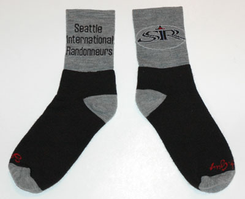

What is the ultimate stocking stuffer? Wool socks, of course!
SIR socks size Large/X Large (fits 9-13) and S/M (fits 6-10) are available at Sammamish Valley Cycle. Made by the Sock Guy (www.sockguy.com) they've got the SIR logo embroidered on the cuff. The price is $6.99 (a heck of deal for wool socks) and SIR members get 15% off.
Material composition of socks: 75% merino wool, 15% nylon, and 10% spandex.
If you're interested in the wool jerseys, wool socks, mud flaps, or reflective gear stocked at Sammamish Valley Cycle, it would be helpful if you could follow this procedure rather than calling the shop:
1) Send an e-mail to mark@sammamishcycle.com listing the items you want.
2) Mark will send back an e-mail confirming availability and the total price including shipping and tax if applicable.
3) Mail a check payable to Sammamish Valley Cycle along with your shipping address to SIR/SVC, 13543 160th Avenue NE, Redmond, WA 98052
